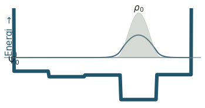
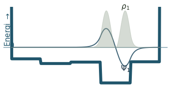
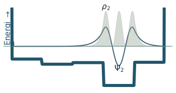
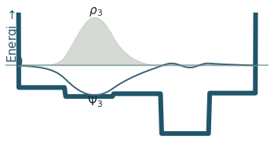
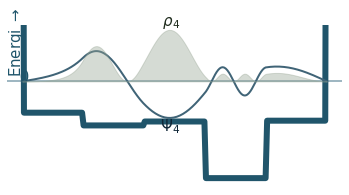
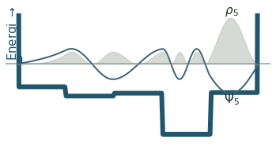
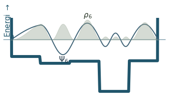
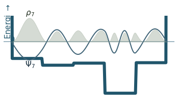
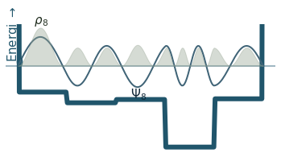
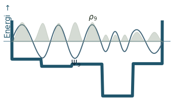

Solving the Schrodinger equation numerically
Contents
Solving the Schrodinger equation numerically#
Author: Audun Skau Hansen ✉️
The Hylleraas Centre for Quantum Molecular Sciences and The Centre for Computing in Science Education, 2022
Finite difference schemes#
You may be aware that we have quite an arsenal of numerical methods which may help us solve differential equations. (If not, take a look at the section on discrete calculus.) This is also true for the Schrödinger equation, at least in the one dimensional case.
Amongst these, finite difference methods consists of essentially two steps:
Discretization of the variables: \(x \rightarrow x_n := n\Delta x\)
Discrete approximation of differentials; \(\frac{d}{dx} f(x) \approx \hat{D}f(x) = F(...,f(x_{n-1}), f(x_{n}), f(x_{n+1}), ..., \Delta x)\)
In the following, we’ll use the center difference
(make sure to derive it for yourself if it seems unfamiliar.)
Numerical methods may have limited precision, but typically broad applicability. Let’s apply this to the one dimensional time-independent Schrödinger equation.
Solving the Schrödinger equation numerically#
Our starting point is the time-independent Schrödinger equation:
Using the center difference, we obtain:
Next, we define \(\alpha = \frac{\hbar^2}{2m \Delta x^2}\), \(V_i = V(x_i)\) and \(\psi_i = \psi(x_i)\), and rearrange our expression into
We shall assume that \(V_0 = V_{N} = s\), where \(s\) is some large number. This is done in order to force \(\psi\) to be zero in the end points.
An Eigenvalue problem#
If you now stare at the expression above long enough, you may realize that it can be cast as a matrix-vector relation:
This is actually a what we call an eigenvalue problem, typically solved using a suitable diagonalization-routine. In our case, we shall use the numpy.linalg.eigh-module, which is tailored for Hermitian matrices as the tri-diagonal one above. Now, let’s get coding:
from scipy.interpolate import interp1d #I will use this for both the potential and the colors
import numpy as np
import matplotlib.pyplot as plt
# some nice colors, feel free to experiment
colorx = np.zeros((3,5), dtype = np.float)
colorx[:,0] = np.array([0.44,0.7,.76])
colorx[:,1] = np.array([0.1,0.1,.2])
colorx[:,2] = np.array([0.97,0.9,.63])
colorx[:,3] = np.array([0.37,0.02,.13])
colorx[:,4] = np.array([0.41,0.87,.62])
colorx = colorx**1.1
palette = interp1d(np.linspace(0,1,5), colorx)
c1,c2,c3, c4 = palette(np.random.uniform(0,1,4)).T
Nx = 200 #number of grid-points
x = np.linspace(-1,1,Nx) #the grid itself
a = 0.5 #we are only interested in the qualitative behaviour of the equation, this is a dummy parameter
dx = x[1]-x[0] # finite stepsize
# construct a potential
vx = -2*np.exp(-15*x**2) #
nnx = 6
vx = interp1d(np.linspace(-1,1,nnx), np.random.uniform(-3,-.1, nnx), 0)(x) #uncomment for random potential
vx[0] = 10
vx[-1] = 10
# set up the hamiltonian
h = np.diag(a*.5*np.ones(Nx)*4/dx**2 + 200*vx)
for i in range(1,Nx-2):
h[i+1,i] = -a/dx**2
h[i,i+1] = -a/dx**2
# diagonalize
e, psi = np.linalg.eigh(h)
# function to visualize the results
def visualize(e,psi,i):
plt.figure(figsize = (6,3))
plt.plot(x,vx, color = c1**2, linewidth = 6, zorder = 10)
#i = 3
plt.axhline(0, color = c3**.5, zorder = -1)
plt.plot(x, 5*psi[:,i], color = c3, linewidth = 2, zorder = 11)
plt.fill_between(x, 0*x, 50*psi[:,i]**2, color = c2**.5, alpha = .4, zorder = 21)
#plt.plot(x, psi[:,1])
plt.xlim(-1.1,1.1)
plt.text(-1.05,0," 0 ", color = c1**2, ha = "left", fontsize = 15, zorder = 20)
ni = np.argmin(psi[:, i])
plt.text(x[ni], 5*psi[ni, i]-.25," $\Psi_{%i}$ " %i, color =c3**2, ha = "center", fontsize = 15, zorder = 20)
ni = np.argmax(psi[:, i]**2)
plt.text(x[ni], 50*psi[ni, i]**2+.1," $\\rho_{%i}$ " %i, color =c2**2, ha = "center", fontsize = 15, zorder = 20)
plt.text(-1.1,.2, "Energi $\\rightarrow$", fontsize = 15, color = c1**2, rotation = 90)
plt.ylim(vx.min()*1.1, 1.1*(50*psi[:,i]**2).max())
plt.axis("off")
#plt.savefig("lincomb_%i.png" % i,transparent = True, dpi = 300, bbox_inches = "tight") #uncomment to save
plt.show()
# visualize the results
for i in range(10):
visualize(e,psi,i)
/var/folders/s2/s91psjjx77g3znkybg2ng_b40000gn/T/ipykernel_4000/3420600210.py:6: DeprecationWarning: `np.float` is a deprecated alias for the builtin `float`. To silence this warning, use `float` by itself. Doing this will not modify any behavior and is safe. If you specifically wanted the numpy scalar type, use `np.float64` here.
Deprecated in NumPy 1.20; for more details and guidance: https://numpy.org/devdocs/release/1.20.0-notes.html#deprecations
colorx = np.zeros((3,5), dtype = np.float)










Discussion
Can you count the nodes? How do they relate to the energy?
How does the probability density behave as the energy increase?
Where is the probability highest for the ground state? What about the most excited state?
What happens to the wavefunction at the endpoints?